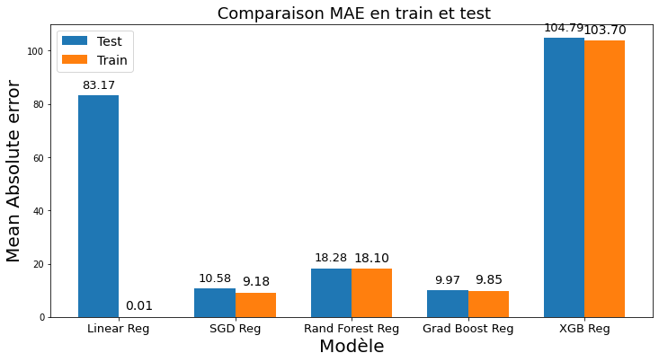

Descriptiion: Cet ensemble de données (ml-25m ) décrit l'activité de classement 5 étoiles et de marquage
en texte libre de MovieLens , un service de recommandation de films. Il contient 25 000 095
classements et 1 093 360 applications de balises sur 62 423 films . Ces données ont été créées par
162541 utilisateurs entre le 09 janvier 1995 et le 21 novembre 2019. Lien vers les données: https://grouplens.org/datasets/movielens/
Missions: Dans ce projet personnel nous effectuerons les points suivants:
1. Des étapes de nettoyage de données brutes
2. L'analyse de données
3. Recommander un certain nombre de films à un groupe similaire.
1. Permettre de visualiser le score et l'interprétation de ce score pour chaque client de façon intelligible pour une personne non experte en data science.
2. Permettre de visualiser des informations descriptives relatives à un client.
3. Permettre de comparer les informations descriptives relatives à un client à l'ensemble des clients ou à un groupe de clients similaires.
NB: L'ensemble du code est disponible sur mon github et à coté à gauche, il y a le tableau de bord élaboré.

Depuis 2001, l'ADEME a acquis toutes les années ces données auprès de l'Union Technique de
l'Automobile du motocycle et du Cycle UTAC (en charge de l'homologation des véhicules avant
leur mise en vente) en accord avec le ministère du développement durable.
Pour chaque véhicule les données d'origine (transmises par l'Utac) sont les suivantes.
ce projet comprend deux notebooks:
1. Nettoyage et feature engineering d'une part.
2. Prédiction d'émission de CO2 des véhicules d'autre part.